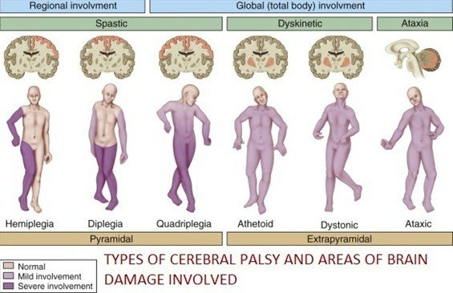

Cerebral Palsy (CP) merupakan kondisi terganggunya fungsi otak besar, bisa dikatakan juga kelumpuhan otak besar. Otak besar merupakan pusat koordinasi seluruh aktivitas keseharian manusia, seperti melihat, mendengar, berbicara, kemampuan berpikir, belajar dan sebagainya. Sehingga jika pusat koordinasi tersebut mengalami gangguan, maka kemampuan untuk melakukan aktivitas keseharian juga akan terganggu
Penyandang CP akan kesulitan mengontrol bagian tubuhnya, dari mulai motorik halus hingga motorik kasar, seperti mengunyah, menelan, memegang benda, bahkan berjalan. Ototnya sulit berkoordinasi dengan otak, sehingga penyandang CP sering terlihat mengeluarkan air liur, dan kekakuan dalam bergerak.
Penyebab CP hingga saat ini belum dapat dipastikan, namun faktor-faktor berikut dapat meningkatkan resiko anak menyandang CP:
a. Faktor Prenatal (Sebelum Kelahiran/Persalinan)
- Ibu mengkonsumsi obat secara berlebihan
- Terjadinya infeksi saat masa kehamilan, seperti rubella, toksoplasma, atau infeksi virus lainnya.
- Ibu mengalami benturan/jatuh.
b. Faktor Natalitas (Saat Kelahiran/Persalinan)
- Bayi lahir prematur
- Persalinan dengan vakum
- Kekurangan oksigen saat lahir
- Keracunan air ketuban
c. Faktor Postnatal (Setelah Kelahiran/Persalinan)
- Mengalami benturan/jatuh
- Terkena virus, seperti meningitis
- Infeksi otak
- Anak kejang berulang

1. TIPE SPASTIK:
A. Hemiplegia
Hemiplegia/hemiparesis- suatu kerusakan yg mengakibatkan lengan maupun tungkai yg satu sisi terlihat lemah atau lumpuh
B. Diplegia
Diplegia /diparesis – suatu keadaan dimana gangguan ada di anggota gerak bawah (tungkai) sementara lengan dan tangan terlihat normal.
C. Quadriplegia
Quadriplegia/quadriparese- artinya semua anggota gerak lemah / layu
2. TIPE DISKENETIK:
A. Distonia
Distonia , permasalahan lebih kearah otot-otot postur / batang tubuh dibandingkan anggota gerak, postur yg memelintir/ memutar.
B. Athetoid
atetoid termasuk dalam cp yang dominan permasalahan gerakan involuntary (tidak terkontrol, tidak disadari), terutama lengan, tungkai dan tangan.
3. TIPE ATAXIC :
Ataxia berimbas pada penurunan kemampuan gerakan terkoordinasi. Keseimbangan dan postur tubuh juga terlibat. Pola berjalan dengan tungkai melebar dan kadang-kadang tidak teratur. Kontrol gerakan mata dan kedalaman persepsi sering terganggu. Seringkali, keterampilan motorik halus yang memerlukan koordinasi mata dan tangan, seperti menulis, akan sulit dilakukan.